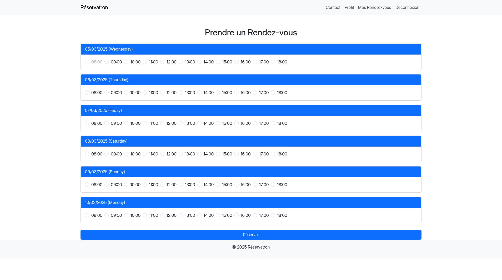

Réservatron

About this project
Réservatron is an online appointment scheduling system built with PHP and MySQL. It allows users to create accounts, manage their profiles, and book appointments. The project implements a user authentication system and profile management features.
The system provides real-time availability of appointment slots, displaying a calendar that distinguishes between available and already booked slots. Users can edit his profile informations, book, manage, and cancel their appointments through their personal dashboard.
Technologies
- PHP
- CSS
- Boostrap
- SQL
- MariaDB / MySQL
Key Features
- Responsive design
- Real-time availability of appointment slots
- Profile management
- Appointment booking and cancellation